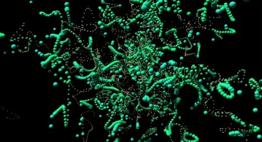
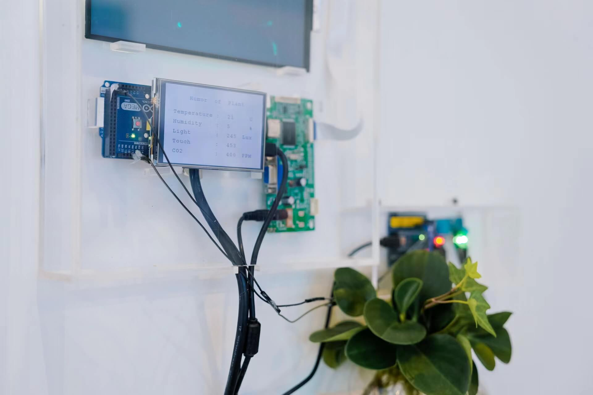
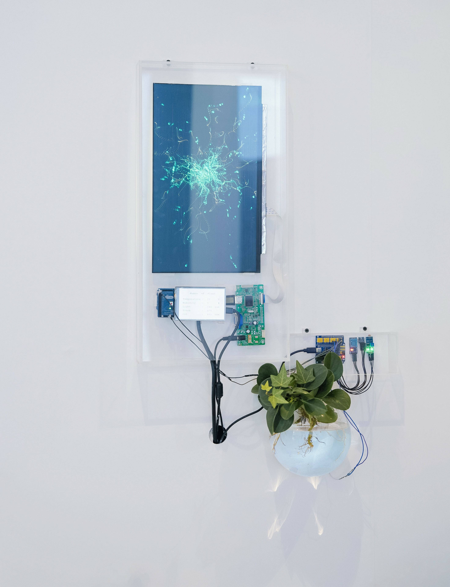
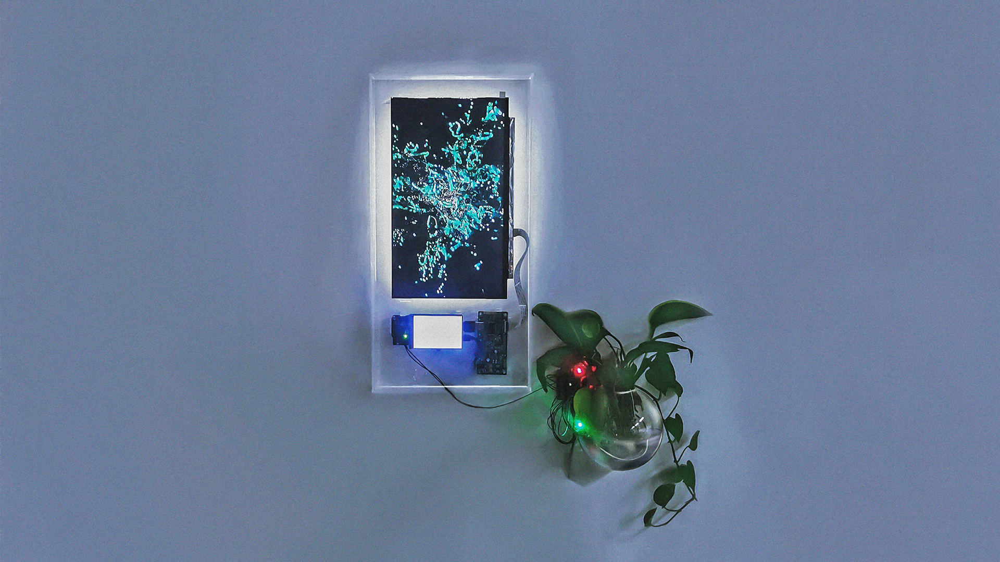
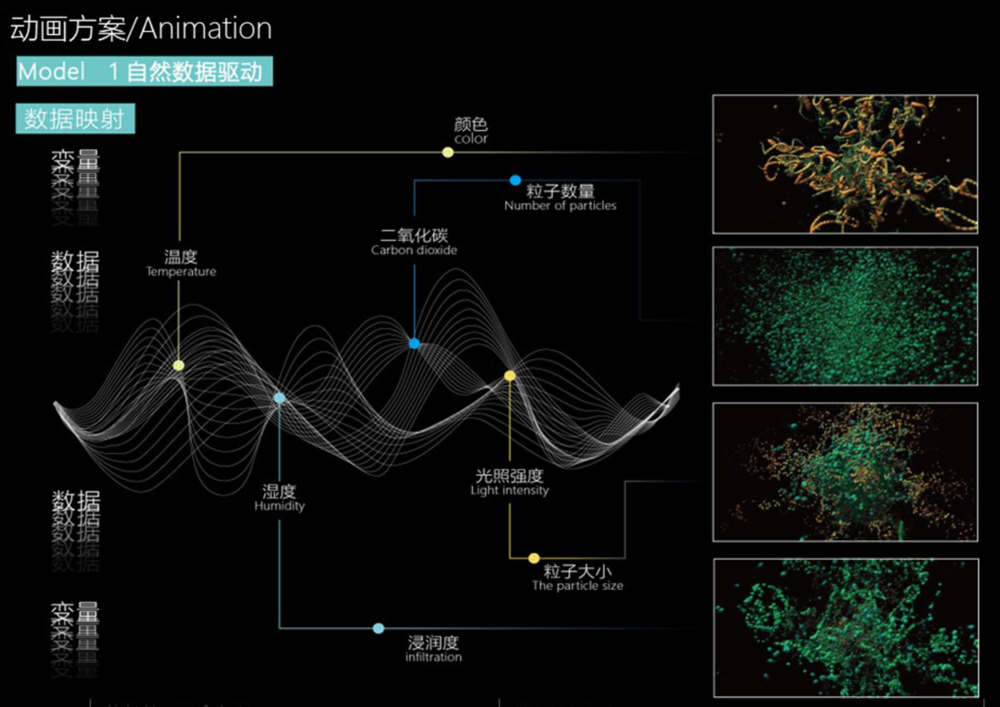
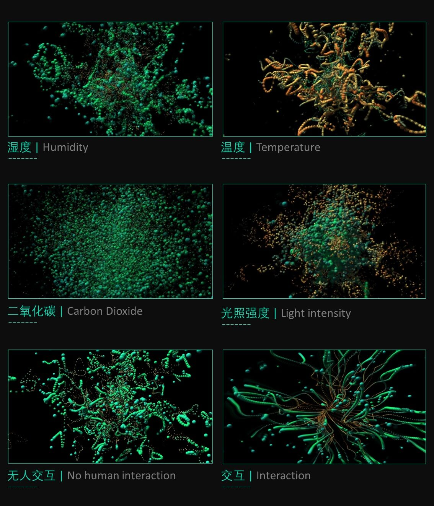

The Light Humor
of Plants

A New Perspective on Life
Our era is undergoing rapid transformations, and the Twenty-first century is expected to mark the advent of biotechnological dominance. Amidst the burgeoning fields of genetic engineering and artificial intelligence, I find myself redefining the very notion of "life."
The convergence of art, computer science, and life sciences has endowed "life" with a more intricate essence. Moreover, the concept of "humans" — once the yardstick for all things — is undergoing decentralization, giving rise to the viewpoint of "non-human centrism."
The concept of the "Anthropocene" has prompted me to question whether humans truly represent the scale of all things. Do intelligent beings exist among the flora around us? Viewing these questions from a non-human perspective offers a distinct vantage point.
Plant Intelligence
My work The Light Humor of Plants embodies my exploration of the aforementioned questions and serves as an investigation into presenting organic life systems within virtual digital environments. Simultaneously, this artwork explores novel interactions among nature, data, and humans. The fusion of organic life and mechanics endows mechanical and synthetic objects with lifelike qualities, while organic life gains more structure and design.
Contemplating organic life, I utilize plants as vessels and employ data visualization techniques to encapsulate external data and internal perceptions of organic life within the confines of "plants." This enables participants to engage in two-way communication with the artist and the artwork during the interaction, exploring how the "life phenomenon" of plants becomes a new channel for message transmission.
In everyday life, we rarely discern signals from plants. However, as creators, we can depict sensitive relationships through enhanced perceptions, merging faint signals from the natural world with digital technology. These connections drive us to create sensitive and poetic languages, allowing us to experience elements that are invisible yet tangibly present in the real world.
Creating interactive installations generates not only a steadfast, visual language but also a language of emotion. I translate the real-time life systems of existing plants into virtual digital environments. For the plant portion, I incorporate a sensory system that transmits the plant's perceived data to the digital system, where it is visualized.





The Light Humor of Plants is a data-driven interactive installation and a digital system composed of plants, creating a hybrid of plants and digital technology. Plants act as natural sensors, highly attuned to various forms of energy flow.
Our bodies generate constant static energy, which remains imperceptible. Plants respond by producing data changes in reaction to different touches. When humans touch plants, the intangible static energy affects the plant leaves and prompts responses.
Throughout the interaction, the anthropomorphized responses of plants will alter the human perception of plant visual imagery, providing a cinematic experience of "plant language."


Fostering Communication
My aspiration is for participants to sense the "language" of plants during interaction (observation). The lifelike forms generated algorithmically within the artwork are real-time visualizations of external data perceived by the plants. This system of representation empowers plants with the capacity to "speak."
On a physical level, the artwork's constant connection, real-time feedback, and continuous online presence establish a sense of "co-presence" between the audience's minds and bodies. The relationship between the artwork and the audience goes beyond mere observation; it involves a "bidirectional communication" of information — a process of creating culture and meaning. By encoding and decoding plant data, meaningful exchanges and negotiations occur between the audience and plants.
My utmost hope is that during "communication," participants will experience not only sensory feedback involving touch, hearing, and vision but will also foster accurate emotional exchange. This will lead to the realization that plants possess "intelligence" and "emotion."
 | Humidity
| Humidity
 | Temperature
| Temperature
 | Carbon Dioxide
| Carbon Dioxide
 | Light Intensity
| Light Intensity
 | No Human Interaction
| No Human Interaction
 | Interaction
| Interaction

